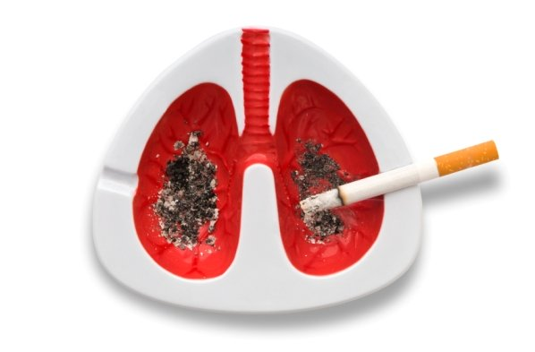

Рак на бели дробови е болест карактеризирана со неконтролиран клеточен раст во ткивата на белиот дроб. Ако се остави без лекување, овој раст може да се прошири надвор од белите дробови во други делови од телото, преку процес којшто се нарекува метастазирање. Повеќето ракови кои почнуваат во белите дробови, наречени примарни белодробни тумори, се карциноми кои потекнуваат од епителни клетки. Главната поделба на белодробниот карцином е на ситноклеточен белодробен карцином (англиски: small cell lung carcinoma) и неситноклеточен белодробен карцином (non-small cell lung carcinoma). Најчестата причина за белодробен рак е долготрајно пушење цигари. Непушачите заземаат 15% од случаите со рак, а во овие случаи болеста често се препишува на комбинација од генетски фактори, изложеност на радон,азбест и загадување на воздухот, вклучувајќи и пасивно пушење
Најчести симптоми се кашлање (вклучувајќи искашлување на крв), губење на телесна тежина и недостиг на воздух. Ракот на белите дробови може да се види на градна радиографија и компјутеризирана томографија. Дијагнозата се потврдува со биопсија. Таа вообичаено се извршува преку бронхоскопија или преку биопсија водена од компјутеризирана томографија. Лекувањето и прогнозата зависат од хистолошкиот вид на рак, стадиумот (степен на ширење) и општата состојба на пациентот. Во вообичаените форми на лекување се вклучени хируршка операција, хемотерапија и радиотерапија. Крупноклеточниот карцином понекогаш се лекува со операција, додека ситноклеточниот обично подобро реагира на хемотерапија и радиотерапија. Преживувањето зависи од стадиумот, општото здравје и други фактори. Општо, во Соединетите Американски Држави, 15% од луѓето со белодробен рак преживуваат пет години по дијагнозата. Ширум светот, белодробниот рак е најчестата причина за канцер-асоцирана смртност меѓу мажите и жените и е одговорна за 1,38 милиони смртни случаи годишно од 2008 година.